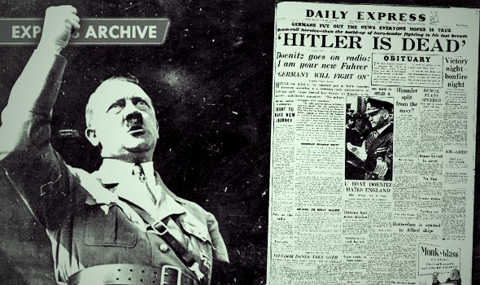

La 30 aprilie 1945, în timpul ultimelor lupte grele în Berlin, pe când trupele sovietice se aflau la mică distanță de cancelaria Reich-ului, Hitler s-a sinucis. Trupul lui și cel al Evei Braun (cu care se cununase în ziua precedentă și care s-a sinucis simultan) au fost depuse în craterul unei bombe, stropite cu benzină de către Otto Günsche și alte ajutoare din Führerbunker și li s-a dat foc când Armata Roșie se apropia și continuau bombardamentele. Înainte de a se sinucide, Hitler își otrăvise câinele pentru a testa otrava.
La 2 mai Helmuth Weidling a capitulat și a predat Berlinul necondiționat sovieticilor. Când au ajuns la cancelarie, forțele sovietice au găsit trupul lui Hitler și au efectuat o autopsie folosind amprente dentare pentru identificare. Rămășițele lui Hitler și ale Evei Braun au fost îngropate în secret de SMERȘ (organizația rusă „Smert Șpionam”) la sediul acesteia din Magdeburg. Potrivit Serviciului Federal Rus de Securitate, un fragment de craniu uman păstrat în arhivele sale și expus într-o expoziție din anul 2000 provine din rămășițele pământești ale lui Hitler. Totuși, autenticitatea craniului este pusă sub semnul întrebării de mai mulți istorici și cercetători.
În mai 1945 Germania era complet ruinată, și nicidecum o „Germanie mare” în stare să distrugă Rusia bolșevică sau să creeze o nouă ordine mondială bazată pe supremația așa-numitei rase „ariene”.


Ora 2.30 a.m.
Medicii si asistentele au organizat o petrecere cu aolcool pe coridorul partii de sus a bunkerului. Doua dintre secretare apar cu inca o femeie: Eva Hitler. Ea sta la capatul unei mese, ciocnind paharele cu alcool si dominand discutia cu tot felul de povesti. Dosctul SS Ernst Schenck nu poate spune daca tremurul din vocea ei este cauzat de teama sau de alcool.
Ora 3 a.m.
Hitler tocmai a aflat ca trupele germane sunt ori incercuite ... ori sub atac si nu pot ajunge in Berlin. Disperat, ordona sa fie trimis un mesaj amiralului Donitz, seful marinei naziste: "Imediat trebuie luate masuri nemiloase impotriva tuturor tradatorilor!".
Hitler tocmai a aflat ca trupele germane sunt ori incercuite ... ori sub atac si nu pot ajunge in Berlin. Disperat, ordona sa fie trimis un mesaj amiralului Donitz, seful marinei naziste: "Imediat trebuie luate masuri nemiloase impotriva tuturor tradatorilor!".
Ora 4.30 a.m.
In bunker, Hitler se retrage in dormitor. Dr. Schenck se intoarce in cancelaria Reichului, unde petrecerea continua. In spatele usii cabinetului stomatologic al cancelariei, o femeie este tintuita de scaunul de pacient. Ziua, aceasta camera este folosita pentru extractii dentare, insa noaptea este cel mai bun loc pentru sex.
In bunker, Hitler se retrage in dormitor. Dr. Schenck se intoarce in cancelaria Reichului, unde petrecerea continua. In spatele usii cabinetului stomatologic al cancelariei, o femeie este tintuita de scaunul de pacient. Ziua, aceasta camera este folosita pentru extractii dentare, insa noaptea este cel mai bun loc pentru sex.
Ora 7 a.m.
Eva Hitler abia daca a dormit. Se grabeste sa ajunga catre gradina cancelariei Reichului. Avea nevoie sa "vada soarele inca o data". Gradina a fost sfasiata de gloante, iar soarele este intunecat din cauza fumului care s-a ridicat dupa luptele grele. Are un moment de ezitare inainte sa se intoarca in dormitor. O jumatate de ora mai tarziu, Adolf Hitler urmeaza exemplul sotiei si se indreapta catre gradina. Pe masura ce ajunge la suprafata, sunetul gloantelor se intensifica. In loc sa deschida usa, el se intoarce si pleaca inapoi in dormitor. In scurt timp, un sunet de pistol se va auzi de pe coridoarele bunkerului, iar ecoul se va auzi in toata lumea.
Eva Hitler abia daca a dormit. Se grabeste sa ajunga catre gradina cancelariei Reichului. Avea nevoie sa "vada soarele inca o data". Gradina a fost sfasiata de gloante, iar soarele este intunecat din cauza fumului care s-a ridicat dupa luptele grele. Are un moment de ezitare inainte sa se intoarca in dormitor. O jumatate de ora mai tarziu, Adolf Hitler urmeaza exemplul sotiei si se indreapta catre gradina. Pe masura ce ajunge la suprafata, sunetul gloantelor se intensifica. In loc sa deschida usa, el se intoarce si pleaca inapoi in dormitor. In scurt timp, un sunet de pistol se va auzi de pe coridoarele bunkerului, iar ecoul se va auzi in toata lumea.
Adolf Hitler si-a inscenat sinuciderea si a fugit in Argentina impreuna cu sotia sa Eva Braun. Au murit amandoi de moarte naturala. Dezvaluirile au fost facute in noua carte “Grey Wolf: The Escape of Adolf”. Potrivit autorilor cartii, dovezile legate de sinucidere lui Adolf Hitler nu sunt credibile. Noile “descoperiri” au fost ridiculizate insa de istoricul Guy Walters, care le-a caracterizat drept “un gunoi 2000%”.
Britanicii Gerrard Williams si Simon Dunstan descriu in detaliu “evadarea” celor doi din Berlin, in 1945, la sfarsitul celui de-Al Doilea Razboi Mondial si sustin ca exista dovezi covarsitoare ca Adolf Hitler nu s-a impuscat in data de 30 aprilie, iar Eva Braun nu s-a sinucis cu cianura. Cei doi ar fi fugit intr-o zona din Argentina fascista, controlata de nazisti. Hitler si Braun ar fi avut si urmasi - doua fete. Hitler ar fi murit la varsta de 73 de ani, in 13 februarie 1962.
Autorii cartii sustin si ca serviciile secrete americane l-ar fi ajutat pe Hitler sa evadeze, in schimbul tehnologiei de razboi inventata de nazisti.
Williams si Dunstan vorbesc si despre fragmentele de craniu aflate in posesia Rusiei, despre care se crede ca ar fi ale Fuhrer-ului. Acestea ar proveni de fapt de la o femeie tanara, care ar fi avut sub 40 de ani la momentul mortii. Liderul nazist avea 56 cand s-a sinucis.Cei doi au documentat cartea pe teren, in Argentina, unde au intervievat mai multi oameni care l-ar fi vazut pe Hitler. Printre ei si un pilot, care sustine ca i-ar fi ajutat pe Hitler si Braun sa fuga in America de Sud, la bordul unui avion.
“Numai acum, cand Argentina este o democratie, povestile adevarate incep sa iasa la iveala. Chiar si asa, doi dintre martori au primit amenintari cu moartea in timp ce lucrau cu noi la carte”, a dezvaluit Williams.
Istoricii ridiculizeaza deja aceste ipoteze si spun ca “martorii” pe a caror marturii se bazeaza cartea nu sunt credibili. Guy Walters insa este de acord ca fragmentele de craniu aflate in Argentina nu sunt ale lui Adolf Hitler.
Iar Rochus Misch, in varsta de 94 de ani, fostul operator radio al lui Adolf Hitler si ultimul supravietuitor al buncarului din Berlin a declarat ca a vazut trupurile neinsufletite ale lui Adolf Hitler si Eva Braun cu ochii lui.
“Eram in camera de langa cand s-a impuscat. Nu am auzit impuscatura, insa i-am vazut corpul neacopeit cand s-a deschis usa. L-am vazut pe Hitler cazut cu capul pe masa. Am vazut-o pe Eva Braun moarta pe canapea, cu capul intors spre Hitler, genunchii ridicati la piept. Purta o rochie albastru-inchis, cu un volan alb la gat”, a declarat Misch.